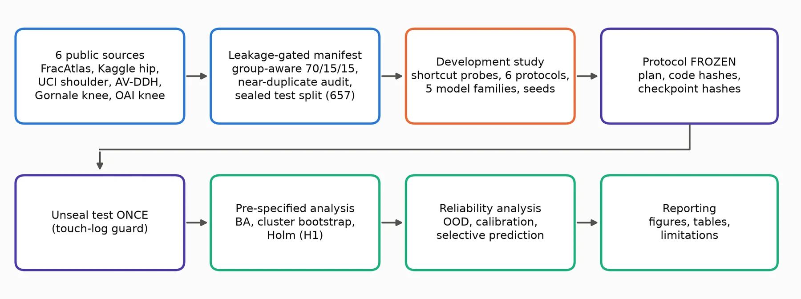

Freeze first, open the test once
A short tour of how the evaluation was constrained to limit analyst degrees of freedom.
- Leakage audit & benchmark
Hash-based duplicate and near-duplicate checks; group-aware splits; 3,102 train / 668 validation / 657 sealed test images. - Development study
All model selection on training/validation partitions only. - Freeze
Analysis plan, statistics, code and recipes recorded with SHA-256 hashes before any test image was opened. - Single unsealing
29 checkpoints evaluated once; the test set refuses to be re-opened; a touch-log records the access. - Frozen statistics
Clustered paired bootstrap (B = 2000, seed 20261004), Holm over five primary models. - Independent audit
13 automated checks recompute metrics, verify hashes and disjointness.
Evaluation protocols
- Pooled random split — the conventional setting.
- Source-decoupled — train without FracAtlas, test on FracAtlas (n = 55).
- Leave-one-source-out — hold out each of K, U, A, G, O.
- Same-source control — identical images scored by models with and without FracAtlas in training.
Models
Random forests on anatomy-free features; frozen ImageNet backbones with linear probes (EfficientNet-B3, ConvNeXt-T, Swin-T); fine-tuned networks (3 seeds for EfficientNet-B3 and Swin-T, one for ConvNeXt-T). Input: greyscale, resized to 160 px.
Metrics
Balanced accuracy (chance 0.333), macro-F1, ECE with temperature scaling, AUROC for unknown-joint detection, risk–coverage curves.

Which algorithms work best?
We compared six supervised methods on frozen EfficientNet-B3 image features reduced to 64 components with PCA. Scaling and PCA were fitted on training data for each setting.
The pooled comparison used 659 validation images. The source-holdout comparison trained without FracAtlas and evaluated 47 FracAtlas validation images. These are exploratory three-class development comparisons. The cohorts differ in composition and size.
| Algorithm | Pooled balanced accuracy | FracAtlas holdout balanced accuracy | Holdout macro-F1 |
|---|---|---|---|
| Logistic regression | 99.3% | 54.3% | 0.519 |
| CART decision tree | 95.8% | 39.5% | 0.372 |
| Random forest | 97.8% | 45.2% | 0.448 |
| RBF SVM | 99.6% | 56.5% | 0.596 |
| Gradient boosting | 98.7% | 46.4% | 0.451 |
| Voting ensemble | 99.6% | 49.9% | 0.480 |
The highest held-source balanced accuracy in this comparison came from RBF SVM. The live workbench uses a separately trained six-region model.
Do the images cluster by joint or source?
K-means, Gaussian mixtures fitted with EM, and hierarchical clustering grouped the image features without using joint labels. Adjusted Rand index measures agreement with joint or dataset labels. A value near zero indicates chance-level agreement.
| Method | Joint agreement (ARI) | Source agreement (ARI) | Silhouette |
|---|---|---|---|
| K-means | 0.331 | 0.514 | 0.095 |
| Gaussian mixture (EM) | 0.581 | 0.386 | 0.139 |
| Hierarchical clustering | 0.370 | 0.550 | 0.095 |
Hierarchical clustering groups the validation cohort directly. K-means and the Gaussian mixture assign validation images to groups learned from training images.
Linear regression targets continuous values, while this task predicts discrete joint labels. Hidden Markov models use ordered observations, while the workbench scores individual X-rays.